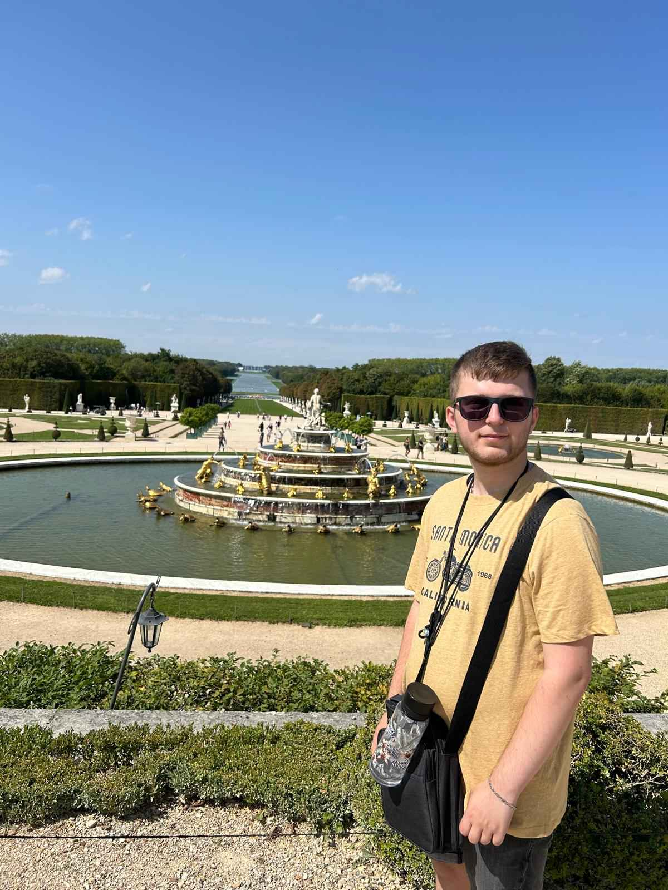
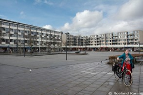
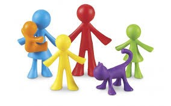
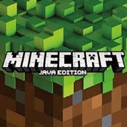

Julien Karch
Mijn naam is Julien Karch en ik woon in Amsterdam, Johan Huizingalaan. En ik ben hier in Nederland geboren, niet in Johan Huizingalaan maar in Osdorp maar we waren in december 2019 verhuisd naar Johan Huizingalaan. En ik kom van Calandlyceum in Pieter Calandlaan en ik heb daar VMBO-T gedaan, en ik doe nu Software Developer en ik wil daarmee bij een bedrijf werken.
Mijn woonplaats
Zoals ik al eerder had gezegd woon ik in Johan Huizingalaan, en dat is bij Sierplein in de buurt en tegenover de Slotervaart ziekenhuis. En ik woon met mijn moeder, broertje en mijn mini Maltezer van ongeveer 2/3 jaar. En er zijn niet echt vrienden in de buurt maar ik kan wel makkelijk naar mijn vrienden met de OV.
In mijn vrije tijd
Ik doe meestal niet heel veel in mijn vrije tijd, meestal game ik of ben ik bezig met school, of ik speel met mijn broertje of mijn hondje uitlaten en soms werk ik in de weekend. Maar soms ga ik wel met vrienden naar buiten of met familie.
Wat kan ik al?
Ik kan al Engels en Nederlands en rekenen, en ik heb nog geen ervaring met coderen of iets anders maar ik wil wel de software development kant op.
Mijn top 10 games
- Minecraft java edition met mods (op pc), want ik kom heel vaak terug naar dat en ik speel het al jaren.
- Splatoon 3 (op nintendo switch), want het is een leuke shooter en je hebt skills voor nodig. Ik heb ook al Splatoon 2 (de vorige game) gespeeld.
- Yo kai watch 3 (op de 3ds), want ik hou van de yo kai watch franchise en ik vindt de story en de characters heel uniek
- Yo kai watch 2 (op de 3ds), hetzelfde over de 3de maar het is iets ouder en heeft minder dingen.
- Paper Mario The Origami King (op Nintendo switch), want ik vindt de story heel leuk en de gevechten waren heel erg puzzle based en turn based, en het heeft mij geïntroduceerd in de paper mario games.
- Paper mario the thousand year remake (op Nintendo switch), het heeft een leuke story maar de characters en battle system is geweldig.
- Super mario party (op de nintendo switch), ik kan niet veel zeggen behalve dat het leuke mappen en items hebben en het is leuk om met mijn broertje te spelen.
- Yo kai watch (op de 3ds en de eerste ding dat van yo kai watch is gemaakt, game of anime), ik vindt de game wel leuk alleen het heeft het minst van alle games en de story is het meest normaal maar het is nogsteeds geweldig.
- Yo kai watch blasters (op de 3ds, en is een spinoff game van de yo kai watch games), want het is een dungeon game en je moet steeds sterker worden en betere items krijgen, maar het is heel leuk.
- Super mario rpg remake (op Nintendo switch), het heeft mij geïntroduceerd in de mario rpg series (paper mario en mario&luigi) maar de game zelf vond ik oke. 